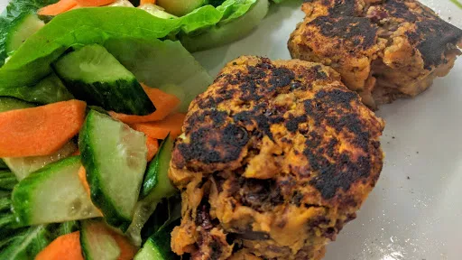

Smoky sweet potato & bean cakes with citrus salad

These storecupboard chipotle patties are not only thrifty, they count as four of your 5-a-day allowance of fruit and vegetables.
Servings: 4
Total: 30 mins
Ingredients
- 2 sweet potatoes, cut into cubes
- 2x 400 g can red kidney beans, drained and rinsed
- 6 spring onions, finely sliced
- small bunch coriander, chopped
- 2 tbsp chipotle paste
- 2 tbsp sunflower oil
- 3 tbsp mayonnaise
- juice 1 lime
- 2 little gem lettuce, torn
- 1 cucumber, halved lengthways and sliced on the diagonal
- 2 carrot, halved lengthways and sliced on the diagonal
Instructions
- Microwave the sweet potato on High for 6 mins until tender. Lightly mash the
beans2x 400 g can
, then add the potatoes, 4 spring onions6
, coriandersmall bunch
, chipotle paste2 tbsp
and seasoning. Mash a little more until the potato is combined. Shape into 8 cakes.
- Heat the oil in a non-stick frying pan, then fry the bean cakes for 4-5 mins each side.
- Meanwhile, mix the
mayo3 tbsp
, lime juice and seasoning in a bowl. Add remaining onion and salad ingredients and toss well. Serve alongside the bean cakes.
-
kcal
431
-
fat
24 g
-
saturates
3 g
-
carbs
39 g
-
sugar
15 g
-
fibre
10 g
-
protein
24 g
-
salt
1.4 g
www.bbcgoodfood.com
Short Link
Long Link

 Vegetarian
Vegetarian